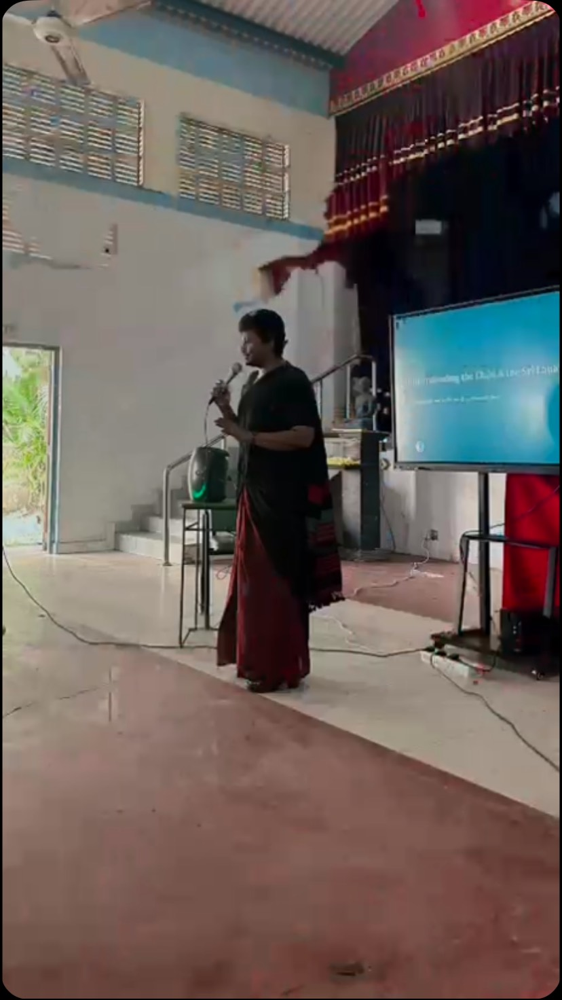
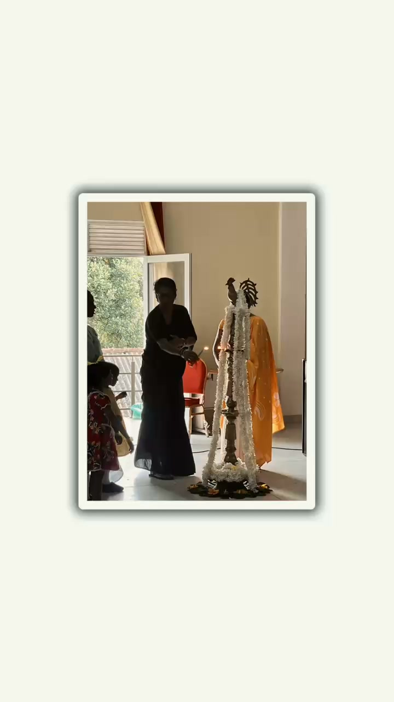

Legal aid
Support navigating the justice system, from the initial complaint through trial and follow-up.
Support for children and women who have survived crime.
Support navigating the justice system, from the initial complaint through trial and follow-up.
Emergency accommodation for survivors in need of a safe place.
Trauma-informed psychological assistance to support recovery.
Practical support to help survivors rebuild stability and reintegrate.

Highlights from a child protection awareness programme for school principals in the Kelaniya Zone.

An awareness session for parents of Montessori children during World Children’s Month.

A full-day child protection awareness session for principals in the Sri Jayawardenepura Kotte education zone.